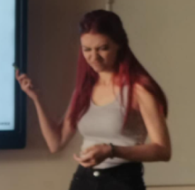
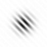

Hi — my name’s Michaela (Mich) and I am a cognitive science PhD student at Yale. I study the role of informational terms (such as disorder and intrinsic randomness) in perceptual decisions. My interests include stochastic resonance, optimal disorder, perception of randomness, and how people weigh sensory evidence in their perceptual decisions.
Михаела Бочева

Me at my undergrad thesis defense, distressed by the reality of multimedia failure
"God does not play dice."
"When I wonder why
What's never been never been so
We would lie when we say
"yes, you know we all love you"
What's never been never been so
Hell, we're nowhere now."
Check out our lab’s website at https://perception.yale.edu/
